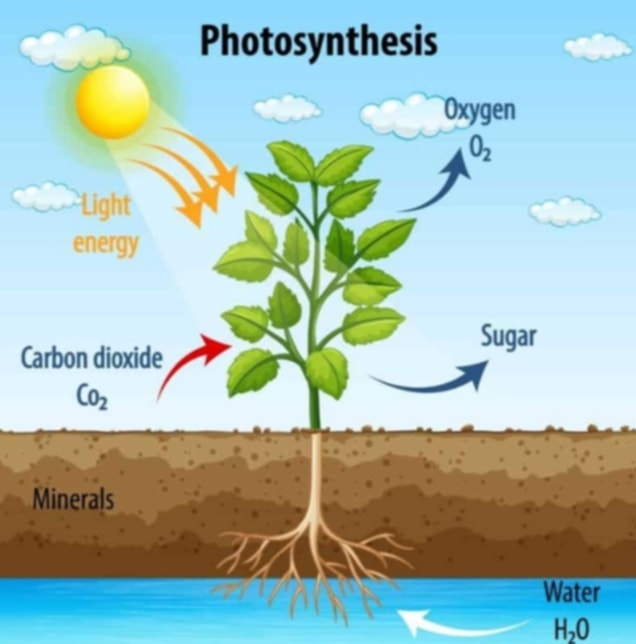
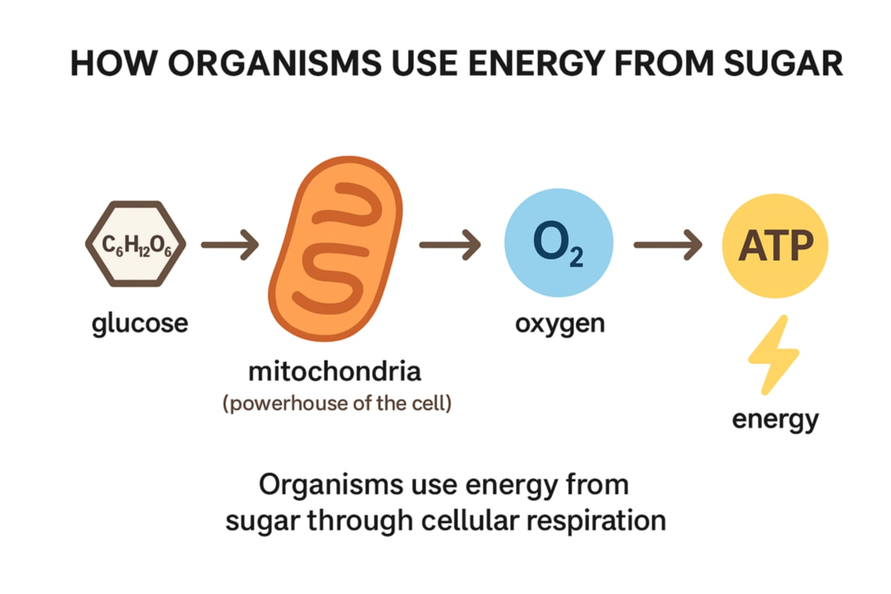
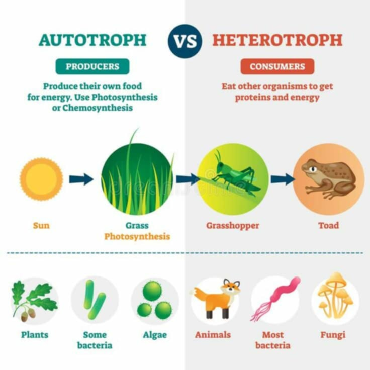

Core Concept
Energy and Life is that all living things need energy to survive, grow, and reproduce. This energy mainly comes from the sun, which plants capture through photosynthesis and convert into food. Animals then get energy by eating plants or other animals. Inside cells, energy is stored and used in the form of ATP (Adenosine Triphosphate), which powers all life processes.
Table of Contents
- Energy and Life
- How Plants Transform Energy from the Sun
- What is Photosynthesis
- How Organisms Use Energy from Sugar
- Autotrophs and Heterotrophs
- Importance of Energy in Life
- Conclusion
Introduction
All living things need energy, which is defined as the ability to do work. You can often see energy at work in living things—a bird flies through the air, a firefly glows in the dark, a dog wags its tail. These are obvious ways that living things use energy, but living things constantly use energy in less obvious ways as well.
Energy and Life
ENERGY in biology refers to the capacity to do work or cause change in biological systems. It is required for all life processes, from cellular respiration to muscle contraction to DNA replication.
Forms of Energy in Biology:
- Chemical energy (stored in bonds of molecules like glucose and ATP)
- Thermal energy (heat)
- Mechanical energy (movement)
- Light energy (used in photosynthesis)
Key Molecule: ATP (Adenosine Triphosphate) – the main energy currency of the cell.
LIFE is a characteristic that distinguishes living organisms from non-living matter. It involves a set of traits such as metabolism, growth, reproduction, response to stimuli, and adaptation through evolution.
Characteristic of Life:
- Organization (cells form tissues, organs, etc.)
- Metabolism (chemical reactions that use or release energy)
- Homeostasis (maintaining internal balance)
- Growth and development
- Reproduction
- Response to environment
- Adaptation and evolution
How Plants Transform Energy from the Sun
Plants transform energy from the sun through a process called photosynthesis.
They use sunlight, water, and carbon dioxide to make their own food. The green pigment chlorophyll in their leaves captures sunlight for this process. The result is glucose, which serves as the plant’s source of energy, and oxygen, which is released into the air. Through photosynthesis, plants provide food and oxygen that support all life on Earth.
What is Photosynthesis
Photosynthesis is the process by which green plants, algae, and some bacteria use sunlight to make their own food.
During photosynthesis, plants take in carbon dioxide (CO₂) from the air and water (H₂O) from the soil. With the help of chlorophyll, the green pigment in leaves, they capture sunlight and convert these materials into glucose (sugar) — their source of energy. As a result, they release oxygen (O₂) into the air.
In short, photosynthesis is how plants use sunlight to create food and give off oxygen that living things need to survive.
How Organisms Use Energy from Sugar
Organisms use energy from sugar through cellular respiration. They break down glucose in the presence of oxygen to produce ATP, the main energy source for cells. This energy helps organisms grow, move, and repair their bodies. The process happens in the mitochondria and releases carbon dioxide and water as waste.
Autotrophs and Heterotrophs
Autotrophs make their own food. Heterotrophs get food by eating other living things.
Autotrophs make food through the process of photosynthesis, in which light energy from the sun is changed to chemical energy that is stored in glucose. All organisms use cellular respiration to break down glucose, release its energy, and make ATP.
Heterotrophs, also known as consumers, are organisms that cannot produce their own food and must obtain energy and nutrients by consuming other organisms or organic matter. They rely on autotrophs or other heterotrophs for their energy needs.
Importance of Energy in Life
Energy is essential for all living things because it allows them to grow, move, reproduce, and survive. It powers all life processes, including cell repair, metabolism, and maintaining balance in the body. Without energy, organisms would not be able to function or live.
Conclusion
In conclusion, energy is the foundation of all life. It enables living things to grow, reproduce, and perform vital functions that keep them alive. Plants capture energy from the sun through photosynthesis, while animals and humans get energy by consuming food. This energy is then used by cells to power all life processes. Without energy, life on Earth would not exist.